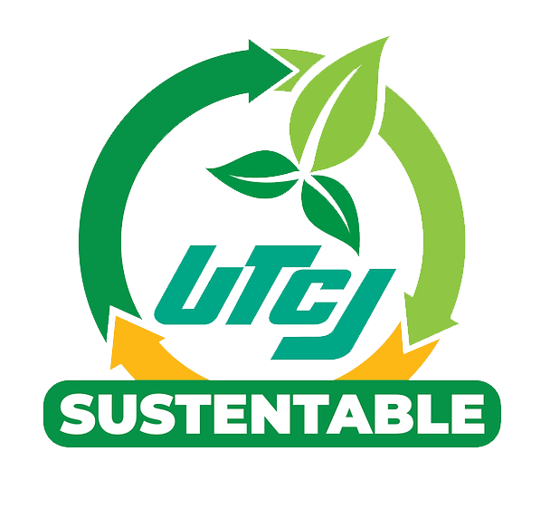

Misión
Desarrollar estrategias de educación y concientización ambiental, por medio de proyectos enfocados en los tres ejes centrales de la sustentabilidad, para garantizar el compromiso con el medio ambiente, la comunidad universitaria y la sociedad.


Visión
Ser un proyecto fundamental en el cual, los alumnos, docentes, administrativos, así como la sociedad en general pueda aprender y convivir en espacios sustentables, generando mejor calidad de vida, apegados al compromiso y responsabilidad ambiental.